A voice is a source filtered by the vocal tract. The source is the buzz of the vocal folds, a
train of glottal pulses that repeats once a period and sets the pitch, or the hiss of air
through a narrow gap. The filter is the vocal tract from the larynx to the lips, whose
resonances, the formants, set the vowel. The two are made in different places and change
independently. In time the sound is the source e convolved with the filter's impulse response
h; in frequency it is their product:
s(t) = (e * h)(t), \qquad S(f) = E(f)\,H(f).
This page builds voices from the two parts, then runs the other way: it measures each part
back from the two recorded talkers of What is a voice, and puts a voice back
together from what it measured.
Running the model backward is the hard direction. Finding both factors from their product
alone is a blind deconvolution, the same problem as separating a sound from the room it was
recorded in (Rooms), and in general it has no single answer, just as
x + y = 14 has none for x and y. A voice can be solved because its structure narrows the
answers. The source is periodic, with an F_0 that can be measured first, so its harmonics
sample the filter once every F_0 hertz. The filter is smooth across frequency, so anything
finer than the spacing of the harmonics belongs to the source. And noise is whatever does not
line up with the harmonics. One ambiguity is left even so: a smooth slope in the glottal
spectrum and a smooth slope in the vocal tract look the same, so a measured envelope holds
both. The synthesizers below separate them only by assuming what the source is like.
Source times filter: a vowel built piece by piece, its spectrum as a product, and why a higher voice shows less of the filter.
Synthesis by rule: vowels, consonants, noise and voice quality from a Klatt synthesizer, and sonore saying its name.
Press play and a line follows the sound across every time axis in its plots. Click any time
axis to play from that point. Start with your volume low.
To run this page yourself, open it as a notebook in Colab or download it. It is the same code, and it fetches the recordings it needs from the sonore repository.
The sentence, and code the examples share
Everything is at 16 kHz. The recordings are one sentence, "Providence had delivered him through
the maelstrom," read by a male talker and a female talker from the CMU ARCTIC corpus (Kominek
and Black, 2004), each with the pitch track that so.f0_track measures and, as a second
opinion, the Harvest track (Morise, 2017) stored with each recording. A synthesized sound is
drawn as a waveform and a wideband spectrogram (Hann 6 ms), which shows formants as dark bands,
with the formant frequencies the synthesizer was given drawn over it. A recording is drawn as a
waveform and a narrowband spectrogram (Hann 33 ms), which resolves the harmonics of both
voices, with a pitch track over it.
Setup, the same on every page
import os
import urllib.request
import matplotlib.pyplot as plt
import numpy as np
import sonore as so
plt.rcParams.update({"font.size": 9, "axes.titlesize": 10, "figure.dpi": 100})
def fetch(path):
"""A file from the sonore repository, by its path there: the local copy when this runs from
the repository root, otherwise downloaded from GitHub to the same relative path."""
if not os.path.exists(path):
os.makedirs(os.path.dirname(path) or ".", exist_ok=True)
urllib.request.urlretrieve("https://raw.githubusercontent.com/choyun1/sonore/main/" + path, path)
return path
def finish(snd):
"""How every sound in the gallery is played: 5 ms ramps, RMS 0.1, peak at most 0.95."""
snd = snd.ramp(5e-3).normalize(rms=0.1)
return snd.normalize(peak=0.95) if snd.peak > 0.95 else snd
Code
FS = 16000
# The two talkers, by the CMU ARCTIC speaker names. Sources: docs/speech/SOURCES.md.
SPEAKERS = {"Male talker": "bdl", "Female talker": "slt"}
talkers = {
label: finish(so.load(fetch(f"docs/speech/{speaker}_arctic_a0131.flac")))
for label, speaker in SPEAKERS.items()
}
tracks = {label: so.f0_track(snd) for label, snd in talkers.items()}
medians = {label: float(np.median(track.f0[0][track.voiced[0]])) for label, track in tracks.items()}
# WORLD's Harvest track of each recording: times and F0, every 5 ms, 0 where unvoiced.
harvest = {
label: np.loadtxt(fetch(f"docs/speech/{speaker}_arctic_a0131_f0.csv"), delimiter=",", skiprows=2).T
for label, speaker in SPEAKERS.items()
}
def onoff(dur, level=60, on=0.02, off=0.05):
"""An amplitude track: up over `on` seconds, down over the last `off` seconds."""
return ([0, on, dur - off, dur], [0, level, level, 0])
def draw(container, snd, title, formants=(), long_titles=True):
"""Waveform and wideband spectrogram in a figure or subfigure, with formant tracks ((times,
values) or numbers) drawn over it. Returns the two panels, for the playhead."""
ax0, ax1 = container.subplots(2, 1, sharex=True, height_ratios=[0.45, 1])
snd.plot(ax0, color="k", lw=0.4)
ax0.set(title=title if not long_titles else f"Waveform: {title}", xlabel="")
frame = so.GaborFrame(0.006, 0.001, n_fft=512) # zero-padded for smooth bands
so.STFT(snd, frame=frame).plot(ax1, db_range=60, colorbar=False, fmax=5000)
if long_titles:
ax1.set_title("Spectrogram (Hann 6 ms), with the formant frequencies given to the synthesizer")
else:
ax1.set_title("Spectrogram (Hann 6 ms), formants given dashed")
for f in formants:
t, v = ([0], [f]) if np.isscalar(f) else f # a track is held after its last point
ax1.plot([*t, snd.duration], np.array([*v, v[-1]]), color="c", lw=1, ls="--")
for ax in (ax0, ax1):
ax.set_xlim(0, snd.duration)
return [ax0, ax1]
def show(snd, title, formants=()):
"""One synthesized sound: waveform and wideband spectrogram, with its formants."""
fig = plt.figure(figsize=(10, 4.2), layout="constrained")
return fig, draw(fig, snd, title, formants)
def show_vowels(sounds, title, formants):
"""Two synthesized sounds side by side; `formants` maps each sound's label to its tracks."""
fig = plt.figure(figsize=(10, 4.4), layout="constrained")
columns = fig.subfigures(1, 2)
playhead = {
label: draw(column, snd, f"{label}: {title}", formants[label], long_titles=False)
for column, (label, snd) in zip(columns, sounds.items(), strict=True)
}
return fig, playhead
def contour_of(track):
"""The times and F0 values of a track (an F0Track or a (times, values) pair), NaN where
unvoiced, for drawing."""
times, values = (track.t, track.f0[0]) if hasattr(track, "f0") else track
return times, np.where(np.asarray(values) > 0, values, np.nan)
def show_talkers(sounds, title, contours=None, win_dur=0.0333):
"""One column per talker: the waveform, and a spectrogram (Hann 33 ms unless given) with an
F0 contour over it if one is given. Returns the figure and, for each talker, the panels the
playhead follows."""
fig = plt.figure(figsize=(10, 4.4), layout="constrained")
playhead = {}
for column, (label, snd) in zip(fig.subfigures(1, 2), sounds.items(), strict=True):
top, bottom = column.subplots(2, 1, sharex=True, height_ratios=[0.4, 1])
snd.plot(top, color="k", lw=0.4)
top.set(title=f"{label}: {title}", xlabel="", ylabel="")
so.STFT(snd, win_dur=win_dur, hop_dur=0.002).plot(bottom, db_range=70, colorbar=False, fmax=5000)
bottom.set_title(f"Spectrogram (Hann {win_dur * 1e3:.0f} ms)")
if contours is not None:
times, values = contour_of(contours[label])
bottom.plot(times, values, color="c", lw=1.2)
for ax in (top, bottom):
ax.set_xlim(0, snd.duration)
playhead[label] = [top, bottom]
return fig, playhead
Source times filter
A vowel, piece by piece
The vowel of "hod", with Peterson and Barney's (1952) average male formants: 730, 1090 and
2440 Hz. The pitch falls from 130 to 100 Hz, as at the end of a statement. Here the pieces are
put together by hand with so.resonator, the second-order resonator of Klatt's (1980)
synthesizer,
y[n] = A\,x[n] + B\,y[n-1] + C\,y[n-2],
with C = -e^{-2\pi B_k T}, B = 2e^{-\pi B_k T}\cos(2\pi F_k T) and A = 1 - B - C for a
formant at F_k Hz, B_k Hz wide, sampled every T seconds.
Code
DUR = 1.0
F0 = ([0, DUR], [130, 100])
HOD = [(730, 60), (1090, 90), (2440, 150), (3500, 200), (4500, 250)]
# Klatt's glottal source: harmonics with the spectrum of an impulse through a low-pass
# resonator at 0 Hz, 100 Hz wide (about -12 dB per octave above 50 Hz).
glottal = so.Sound(np.r_[1.0, np.zeros(2**14 - 1)], FS)
rgp = np.abs(np.fft.rfft(so.resonator(glottal, 0, 100).data[:, 0]))
pulse_freqs = np.fft.rfftfreq(2**14, 1 / FS)
source = so.harmonic_complex(DUR, FS, F0, amplitudes=lambda t, f: np.interp(f, pulse_freqs, rgp))
# Radiation from the lips: a first difference, +6 dB per octave.
source = so.Sound(np.diff(source.data[:, 0], prepend=0.0), FS)
The source alone
The source on its own: the glottal pulse train after radiation, a buzz with no vowel in it.
Its harmonics fall smoothly with frequency, with no peaks.
fv1_the_source_alone.flac, 1.0 s, mono
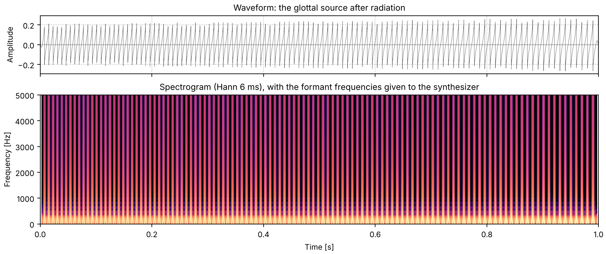
Code
sound = finish(source)
fig, playhead = show(sound, "the glottal source after radiation")
The first formant
Through the first formant only, at 730 Hz. The buzz becomes a dull, muffled vowel: all that is
left is energy around F1.
fv2_the_first_formant.flac, 1.0 s, mono
Code
one = so.resonator(source, *HOD[0])
sound = finish(one)
fig, playhead = show(sound, "the source through F1", [730])
Two formants
Through the first two formants. F1 and F2 are what tells most vowels apart, and with both, the
sound is recognizably the vowel of "hod", if thin.
fv3_two_formants.flac, 1.0 s, mono
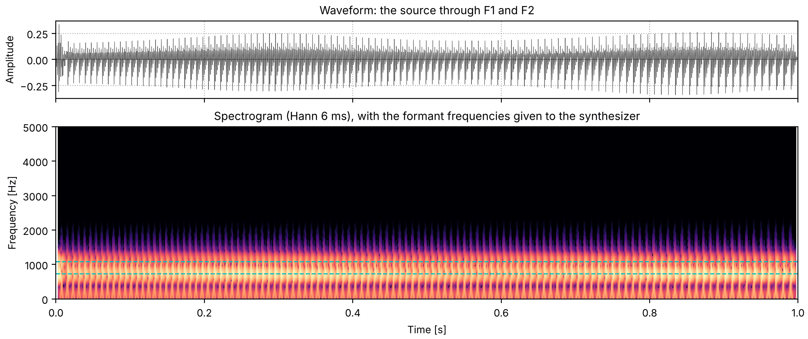
Code
two = so.resonator(one, *HOD[1])
sound = finish(two)
fig, playhead = show(sound, "the source through F1 and F2", [730, 1090])
Five formants
All five formants in cascade (one after the other). F3 to F5 add the brightness of a real
voice; their levels follow from their frequencies, as they do in a vocal tract.
fv4_five_formants.flac, 1.0 s, mono
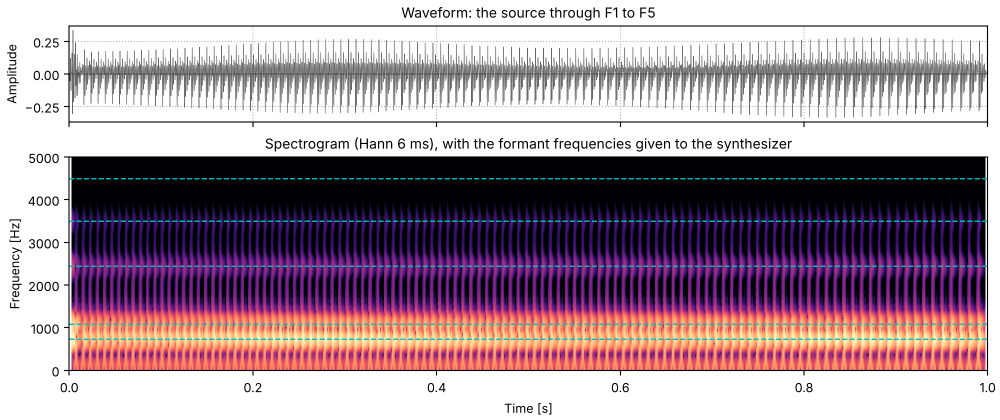
Code
vowel = source
for f, bw in HOD:
vowel = so.resonator(vowel, f, bw)
sound = finish(vowel)
fig, playhead = show(sound, "the source through F1 to F5", [f for f, _ in HOD])
The spectrum as a product
Because the source and the formants are separate, the spectrum of the vowel is the product of
their spectra: in dB, a sum. Here the pitch is held at 100 Hz, so the harmonics sit at
multiples of 100 Hz; each one's level is the source's level at that frequency plus the
formants' gain there.
The vowel spectrum as source plus filter
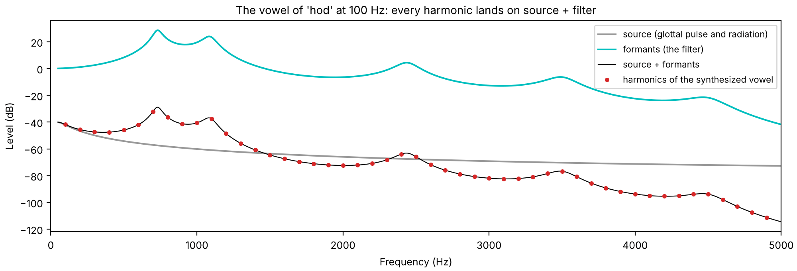
Code
hod = dict(F1=730, F2=1090, F3=2440)
vowel = so.klatt_synthesize(1.0, FS, F0=100, **hod)
spec = np.abs(np.fft.rfft(vowel.data[-FS // 2 :, 0])) # the last 0.5 s, 2 Hz per bin
k = np.arange(1, 50)
measured = 20 * np.log10(spec[k * 50]) # harmonic k at 100 k Hz is bin 50 k
f = np.linspace(50, 5000, 2000)
z = np.exp(-2j * np.pi * f / FS)
def gain(fk, bk, f):
c, b = -np.exp(-2 * np.pi * bk / FS), 2 * np.exp(-np.pi * bk / FS) * np.cos(2 * np.pi * fk / FS)
zf = np.exp(-2j * np.pi * f / FS)
return np.abs((1 - b - c) / (1 - b * zf - c * zf**2))
src_db = 20 * np.log10(gain(0, 100, f) * np.abs(1 - z))
filt_db = 20 * np.log10(np.prod([gain(fk, bk, f) for fk, bk in HOD], axis=0))
total = src_db + filt_db
harmonics = measured - measured[0] + np.interp(100, f, total) # the output's level is arbitrary
fig, ax = plt.subplots(figsize=(10, 3.4), layout="constrained")
ax.plot(f, src_db, color="0.6", label="source (glottal pulse and radiation)")
ax.plot(f, filt_db, color="c", label="formants (the filter)")
ax.plot(f, total, color="k", lw=0.8, label="source + formants")
ax.plot(k * 100, harmonics, "o", ms=3, color="C3", label="harmonics of the synthesized vowel")
ax.set(xlabel="Frequency (Hz)", ylabel="Level (dB)", xlim=(0, 5000))
ax.set_title("The vowel of 'hod' at 100 Hz: every harmonic lands on source + filter")
ax.legend(loc="upper right", fontsize=8)
Harmonics sample the envelope
A voiced sound has energy only at the harmonics, so the filter, and with it the formants, is
seen only where a harmonic falls: the harmonics sample it, once every F_0 hertz. To see
that alone, the cell makes the same vowel twice with so.klatt_synthesize, with the same male
formants, at each talker's median pitch.
Code
vowels = {label: so.klatt_synthesize(0.6, FS, F0=f0, **hod) for label, f0 in medians.items()}
for label, f0 in medians.items():
print(f"{label}: F0 {f0:.0f} Hz, {int(1000 // f0)} harmonics below 1 kHz")
The vowel at each pitch: the same formants, and so the same vowel, sampled by harmonics at
different spacings. Below each waveform, the spectrum of the middle 400 ms, with the five
formants dashed. The female talker's pitch puts fewer harmonics under each formant peak, so the
peaks are drawn by fewer points, and a harmonic can miss a peak by up to half the spacing.
Every measurement of the filter below is limited by this, a little more for the female
talker.
In a formant synthesizer every part of the model is a number: the source's pitch and level,
and the frequency and bandwidth of each formant. so.klatt_synthesize follows Klatt (1980).
Voicing is a set of harmonics of F_0 with the spectrum of Klatt's glottal pulse, aspiration
and frication are noise, and the formants are the resonators above. Every parameter is a number
or a track of (times, values), so the sounds below are written down rather than recorded,
and any cue can be changed while the others stay put.
The same vowel from so.klatt_synthesize
The vowel of "hod" from so.klatt_synthesize, with the voicing switched on and off over 20
and 50 ms. Apart from those ramps it is the five-formant vowel built by hand above: the
synthesizer does the same steps.
Peterson and Barney (1952) measured the formants of ten American English vowels, spoken in words
of the form h-vowel-d by 33 men, 28 women and 15 children, and published the averages of each
group. Their male and female averages for six of the vowels are below, each set synthesized with
everything else the same within the set: the pitch, the higher formants and the bandwidths.
Every female formant is higher than the male one, since female vocal tracts are on average
shorter, but not by one common factor: the cell prints the ratios. The female pitch is higher
too, falling from 230 to 200 Hz where the male one falls from 125 to 105 Hz, and F4 and F5,
which Peterson and Barney did not measure, are raised from 3500 and 4500 Hz to 4100 and 4900 Hz
to stay above the female F3. These are averages over many talkers. The two recorded talkers
are one man and one woman, and how their formants differ is measured on What is a
voice.
Code
VOWELS = { # male averages, F1 F2 F3 (Hz)
"heed": (270, 2290, 3010),
"head": (530, 1840, 2480),
"had": (660, 1720, 2410),
"hod": (730, 1090, 2440),
"hawed": (570, 840, 2410),
"who'd": (300, 870, 2240),
}
VOWELS_FEMALE = { # female averages
"heed": (310, 2790, 3310),
"head": (610, 2330, 2990),
"had": (860, 2050, 2850),
"hod": (850, 1220, 2810),
"hawed": (590, 920, 2710),
"who'd": (370, 950, 2670),
}
VOWEL_DUR = 0.42
GAP = 0.15
# Each set: its vowels, and what else it is made with (a falling pitch, and F4 and F5).
SETS = {
"Male formants and pitch": (VOWELS, dict(F0=([0, VOWEL_DUR], [125, 105]), F4=3500, F5=4500)),
"Female formants and pitch": (VOWELS_FEMALE, dict(F0=([0, VOWEL_DUR], [230, 200]), F4=4100, F5=4900)),
}
def say(steps, dur, **rest):
"""Vowels in turn, from a list of parameter sets (F1, F2, F3), each `dur` long with a gap
after it, and their F1 to F3 as tracks to draw, one dashed segment per vowel."""
parts = []
for p in steps:
parts += [so.klatt_synthesize(dur, FS, p, AV=onoff(dur), **rest), so.silence(GAP, FS)]
starts = np.arange(len(steps)) * (dur + GAP)
times = np.ravel([[start, start + dur, start + dur] for start in starts])
lines = [(times, np.ravel([[p[name], p[name], np.nan] for p in steps])) for name in ("F1", "F2", "F3")]
return finish(so.concat(parts[:-1])), lines
def formant_dicts(vowels):
return [dict(F1=f1, F2=f2, F3=f3) for f1, f2, f3 in vowels.values()]
ratios = {word: np.divide(VOWELS_FEMALE[word], VOWELS[word]) for word in VOWELS}
for word, ratio in ratios.items():
print(f"{word:6} female / male, F1 F2 F3: " + ", ".join(f"{r:.2f}" for r in ratio))
lowest, highest = min(r.min() for r in ratios.values()), max(r.max() for r in ratios.values())
heed female / male, F1 F2 F3: 1.15, 1.22, 1.10
head female / male, F1 F2 F3: 1.15, 1.27, 1.21
had female / male, F1 F2 F3: 1.30, 1.19, 1.18
hod female / male, F1 F2 F3: 1.16, 1.12, 1.15
hawed female / male, F1 F2 F3: 1.04, 1.10, 1.12
who'd female / male, F1 F2 F3: 1.23, 1.09, 1.19
The ratios run from 1.04 to 1.30, so the female vowels are
not the male ones moved up as a whole: each vowel, and each formant, moves by its own amount.
Six vowels
The six vowels in turn, from "heed" to "who'd", with each set's formants and pitch. The dashed
lines are each vowel's F1, F2 and F3. The female harmonics are farther apart, so each formant
peak is drawn by fewer of them, as Harmonics sample the
envelope shows for one vowel. Timbre
sings three of the female vowels on one note.
Both sets by their first two formants, joined vowel by vowel, with the axes reversed as is
usual, so that the chart reads like the mouth seen from the left: vowels with the tongue high
at the top, vowels with the tongue forward at the left. Every female vowel has a higher F1 and
F2 than the male one, and the female vowels spread wider, most of all in F2 for the front
vowels.
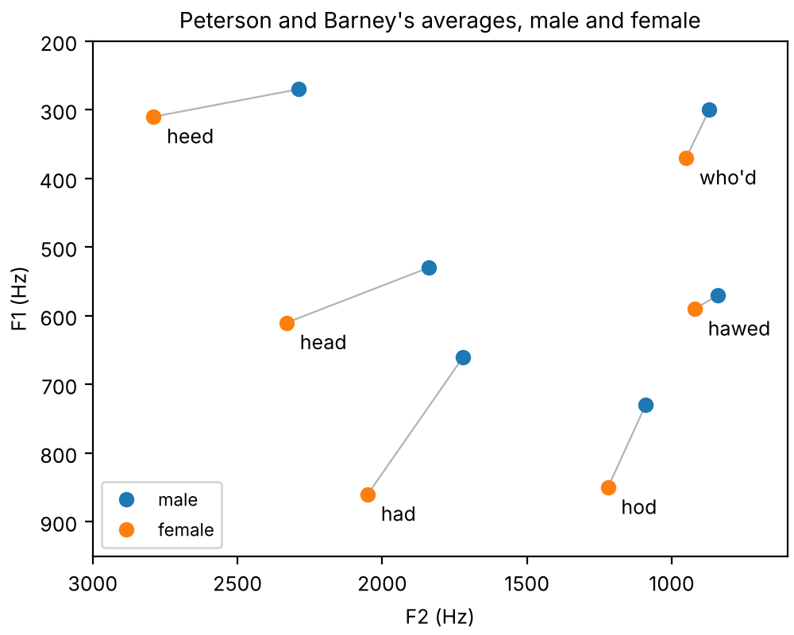
Code
fig, ax = plt.subplots(figsize=(5, 4), layout="constrained")
for word in VOWELS:
(f1_male, f2_male, _), (f1_female, f2_female, _) = VOWELS[word], VOWELS_FEMALE[word]
ax.plot([f2_male, f2_female], [f1_male, f1_female], color="0.7", lw=0.8)
ax.annotate(word, (f2_female, f1_female), textcoords="offset points", xytext=(6, -12))
for (label, (vowel_set, _)), color in zip(SETS.items(), ["C0", "C1"], strict=True):
f1, f2, _ = np.transpose(list(vowel_set.values()))
ax.plot(f2, f1, "o", color=color, label=label.split()[0].lower())
ax.set(xlabel="F2 (Hz)", ylabel="F1 (Hz)", xlim=(3000, 600), ylim=(950, 200))
ax.legend(loc="lower left", fontsize=8)
ax.set_title("Peterson and Barney's averages, male and female")
Consonants from transitions
A stop consonant before a vowel is mostly heard in the first few tens of milliseconds of the
vowel: the formants move from where the closure left them to the vowel's values. Here F1 rises
from 250 Hz in each, and only the starting points of F2 and F3 differ. A short burst of
frication marks the release: flat for /b/, high for /d/, near F2 for /g/.
Klatt's synthesizer has two noise sources. Aspiration goes through the same formants as
voicing (the cascade), as the breath noise of /h/ does. Frication goes through a separate,
parallel set of formants, each with its own level, because a fricative's noise is made in a
constriction near the front of the mouth and excites mainly the resonances in front of it.
While voicing is on, both noises are modulated at F_0, 50% deep, as breath through vibrating
vocal folds is.
The syllable sa
/sa/: frication through the parallel formants 5 and 6 (4500 and 5500 Hz), then the vowel. As
in speech, there is no silence between them: the voicing starts while the frication is still
fading, and the first two formants glide from where the tongue left them (F1 low, F2 near
1700 Hz) to the vowel's values over the first 60 ms of voicing.
/ha/: aspiration alone through the vowel's formants, then voicing. The formants of the vowel
are already there in the breath, and the breath carries on into the first 50 ms or so of the
voicing, fading as it goes, so the vowel starts breathy.
A breathy "hod": voicing with aspiration 6 dB below it throughout, and a wider first formant.
The noise fills in between the harmonics, most at high frequencies where the harmonics are
weak. A richer source-filter model makes a breathy vowel whose share of
noise at each frequency is known, and measures it.
Everything above used Klatt's 1980 source, whose spectrum is fixed. The glottal pulse itself
changes with how the vocal folds are held: pressed together they close abruptly, which makes
strong high harmonics; held loosely they close gradually, leaving little but the fundamental.
The Liljencrants-Fant (LF) model (Fant, Liljencrants & Lin, 1985) describes one period of the
glottal flow's derivative E(t): an exponentially growing sinusoid while the glottis opens,
E(t) = E_0\, e^{\alpha t} \sin(\pi t / t_p), \qquad 0 \le t \le t_e,
down to its sharp negative peak -E_e at closure t_e, then an exponential return to zero.
Fant (1995) set the whole shape with one number,
R_d = \frac{U_0}{0.11\, E_e T_0},
the peak flow U_0 against the strength of the closure, in a period T_0: about 0.3 for a
tense, pressed voice to 2.7 for a lax, breathy one, and close to 0.7 for typical male
voices. so.glottal_source makes LF pulses from their harmonics, which have an exact
formula, so nothing aliases, and so.klatt_synthesize uses them with SS=3 (the source
switch of Klatt & Klatt's KLSYN88) and RD. The RD control is sonore's: KLSYN88 shapes its
LF pulse with the open quotient, the speed quotient and a spectral tilt instead.
One period of the LF pulse at three values of Rd
The same peak excitation E_e in all three. The tense pulse opens for a shorter part of the
period and passes less air; the lax one stays open longer, and its closure is a gentle slope
rather than a sharp corner. The sharp corner is what makes high harmonics.
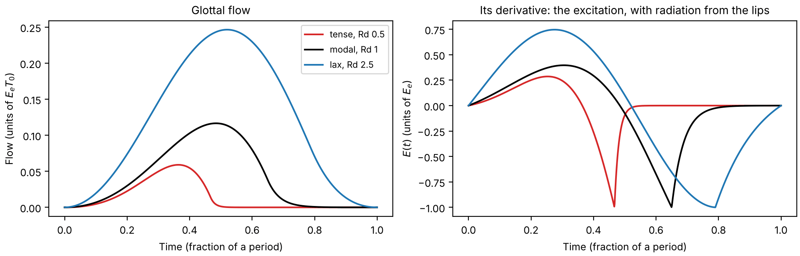
Code
x = np.linspace(0, 1, 1000)
RDS = {0.5: "tense, Rd 0.5", 1.0: "modal, Rd 1", 2.5: "lax, Rd 2.5"}
fig, (ax0, ax1) = plt.subplots(1, 2, figsize=(10, 3.2), layout="constrained")
for (rd, label), color in zip(RDS.items(), ["C3", "k", "C0"], strict=True):
ax0.plot(x, so.lf_pulse(x, rd, flow=True), color=color, label=label)
ax1.plot(x, so.lf_pulse(x, rd), color=color, label=label)
ax0.set(xlabel="Time (fraction of a period)", ylabel="Flow (units of $E_e T_0$)")
ax0.set_title("Glottal flow")
ax1.set(xlabel="Time (fraction of a period)", ylabel="$E(t)$ (units of $E_e$)")
ax1.set_title("Its derivative: the excitation, with radiation from the lips")
ax0.legend(fontsize=8)
The spectra of the three pulses, and of the 1980 source
The harmonics' levels depend on the harmonic number only, not on F_0. The difference
between the first two harmonics, H1-H2, is the usual measure of this in recordings; Fant's
(1995) fit to it, -7.6 + 11.1\,R_d dB, agrees with these spectra to within half a decibel
up to R_d 1.4. Klatt's 1980 source has the H1-H2 of a modal voice, but around 3 kHz its harmonics
are stronger than even the tense pulse's. The three pulses heard in one vowel, at the male and
the female talker's pitch, are on What is a voice.
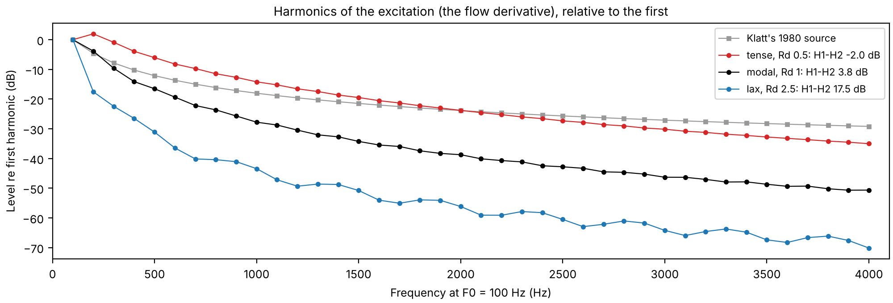
Code
k = np.arange(1, 41)
klatt_1980 = gain(0, 100, k * 100) * np.abs(1 - np.exp(-2j * np.pi * k * 100 / FS))
fig, ax = plt.subplots(figsize=(10, 3.4), layout="constrained")
ax.plot(
k * 100,
20 * np.log10(klatt_1980 / klatt_1980[0]),
"s-",
ms=3,
lw=0.8,
color="0.6",
label="Klatt's 1980 source",
)
for (rd, label), color in zip(RDS.items(), ["C3", "k", "C0"], strict=True):
levels = 20 * np.log10(np.abs(so.lf_harmonics(k, rd)))
levels -= levels[0]
ax.plot(k * 100, levels, "o-", ms=3, lw=0.8, color=color, label=f"{label}: H1-H2 {-levels[1]:.1f} dB")
ax.set(xlabel="Frequency at F0 = 100 Hz (Hz)", ylabel="Level re first harmonic (dB)", xlim=(0, 4100))
ax.set_title("Harmonics of the excitation (the flow derivative), relative to the first")
ax.legend(fontsize=8)
sonore says its name
The word "sonore" (/sɔnɔʁ/) synthesized with Klatt, with measurements from a recording of the
word from frenchdictionary.com. The /s/ is
frication through the high parallel formants, with the voicing starting under its tail, as in
/sa/. The first vowel is short, about 80 ms, and the pitch falls through it from about 265 Hz to
about 195 Hz, then stays nearly level. For the /n/, F1 drops and the nasal zero opens. Through
the second vowel F2 slides down from about 1800 Hz to 1200 Hz, into the /ʁ/, which is voiceless
here: about 100 ms of aspiration noise through formants near 750 and 1250 Hz.
sonore_from_recording.py
measures the recording and prints the table these tracks were read from, then makes an automatic
copy from the measurements, with nothing set by hand, to compare. sonore's logo is drawn loosely
from this spectrogram: a few short strokes for the /s/, then three lines with one rise and one
step down. It is a picture of the sound rather than a plot of it.
The source's first number is its pitch. A voiced sound repeats once every glottal period,
T_0, and its pitch track is F_0 = 1/T_0 measured every few milliseconds, with a decision in
each time window about whether there is a period to measure at all. This section measures the
pitch of both talkers three ways, all on the same grid of time windows every 5 ms from time 0:
the peak of the cepstrum, so.f0_track, and Harvest's stored track.
Pitch from the cepstrum
Take the logarithm of a spectrum and the product of source and filter becomes a sum. The
cepstrum is the Fourier transform of that log spectrum (Bogert et al., 1963):
c(q) = \mathcal{F}^{-1}\{\ln |X(f)|\}(q).
Its variable q, the quefrency, is a time. The filter varies slowly along frequency, so it
lands at low quefrencies, the first few milliseconds. The harmonics ripple the log spectrum
once every F_0 hertz, so they land at one period, q = 1/F_0, as a peak. The two parts that
were tangled in the spectrum come apart: this section reads the peak, and the
envelope keeps the rest.
Taking the cepstrum of every time window gives a cepstrogram, time across and quefrency up, in
which a voiced stretch is a bright line at the period, falling as the pitch rises. Picking the
largest peak between 2.5 and 13.3 ms (400 and 75 Hz) in each time window is the classic
cepstral pitch estimate (Noll, 1967); a time window counts as voiced when the peak is taller
than 0.1. Here each time window is 40 ms of Hann window.
The window must hold a few periods for the harmonics to show as a ripple: so.Cepstrum.f0
asks for three periods of its lowest F0, and 40 ms is three periods at 75 Hz. A higher voice
fits more periods into the same window (the cell prints how many at each median), and its
line runs at a shorter quefrency. That brings a risk of its own. A cepstrum has smaller peaks
at whole multiples of the period as well, the rahmonics (Bogert et al., 1963), and the second
one, at two periods, falls inside the search range whenever F_0 is above 150 Hz. If it wins
over the first, the estimate is an octave low.
Code
# The cepstrum of 40 ms Hann windows every 5 ms, and the cepstral F0 of each: (times, F0, peak height).
stfts = {label: so.STFT(snd, win_dur=0.040, hop_dur=0.005) for label, snd in talkers.items()}
cepstra = {label: so.Cepstrum(stft) for label, stft in stfts.items()}
cepstral_pitch = {label: cep.f0(f_lo=75, f_hi=400) for label, cep in cepstra.items()}
def three_tracks(label):
"""The three tracks of one talker at so.f0_track's time windows, 0 where unvoiced. All three
are on the same 5 ms grid from time 0, so this only picks out the shared time windows."""
track = tracks[label]
cepstral_t, cepstral_f0, _ = cepstral_pitch[label]
harvest_t, harvest_f0 = harvest[label]
return {
"cepstral": cepstral_f0[0][np.searchsorted(np.round(cepstral_t, 6), np.round(track.t, 6))],
"so.f0_track": np.where(track.voiced[0], track.f0[0], 0.0),
"Harvest": harvest_f0[np.searchsorted(np.round(harvest_t, 6), np.round(track.t, 6))],
}
pitch = {label: three_tracks(label) for label in talkers}
F0_TICKS = [60, 80, 100, 150, 200, 300, 400]
COLORS = {"cepstral": "tab:blue", "so.f0_track": "tab:orange", "Harvest": "0.55"}
for label, f0 in medians.items():
print(f"{label}: median F0 {f0:.0f} Hz, period {1e3 / f0:.2f} ms, {0.040 * f0:.1f} periods in 40 ms")
for label, f0 in pitch.items():
voiced_f0 = f0["so.f0_track"][f0["so.f0_track"] > 0]
print(f"{label}: two periods inside 13.3 ms on {np.mean(voiced_f0 > 150):.0%} of voiced windows")
def octave_below(f0, reference):
"""True where both are voiced and f0 is half the reference, within 5%."""
both = (f0 > 0) & (reference > 0)
return both & (np.abs(f0 / np.where(both, reference, 1.0) - 0.5) < 0.025)
Male talker: median F0 119 Hz, period 8.37 ms, 4.8 periods in 40 ms
Female talker: median F0 183 Hz, period 5.47 ms, 7.3 periods in 40 ms
Male talker: two periods inside 13.3 ms on 1% of voiced windows
Female talker: two periods inside 13.3 ms on 100% of voiced windows
The cepstrogram and its pitch
Each talker's sentence. Top: the cepstrogram, with Harvest's period drawn over it. Bottom: the
cepstral F0 beside Harvest's, on a logarithmic frequency axis. Red circles mark time windows
where the cepstral F0 is an octave below Harvest's (within 5%). Each time window is judged on
its own, with no continuity from one to the next.
for label, f0 in pitch.items():
both = (f0["cepstral"] > 0) & (f0["Harvest"] > 0)
close = np.mean(np.abs(f0["cepstral"][both] / f0["Harvest"][both] - 1) < 0.05)
low = octave_below(f0["cepstral"], f0["Harvest"])
times = ", ".join(f"{s:.3f} s" for s in tracks[label].t[low]) or "no time window"
print(f"{label}: both voiced on {both.sum()} windows, cepstral F0 within 5% of Harvest on {close:.1%};")
print(f" an octave below Harvest on {low.sum()} ({low.sum() / both.sum():.1%}): {times}")
Male talker: both voiced on 318 windows, cepstral F0 within 5% of Harvest on 95.6%;
an octave below Harvest on 0 (0.0%): no time window
Female talker: both voiced on 344 windows, cepstral F0 within 5% of Harvest on 93.6%;
an octave below Harvest on 3 (0.9%): 0.330 s, 0.335 s, 0.340 s
Where both call a time window voiced, the cepstral F0 mostly lands on Harvest's. The female
talker's octave errors are the rahmonic winning; the male talker's second rahmonic lies
beyond the 13.3 ms the search reaches in every voiced time window, so it cannot be chosen.
A tracker beside the cepstrum
so.f0_track works the other way round. It looks for the period in the waveform rather than
the log spectrum, with YIN's difference function (de Cheveigné & Kawahara, 2002): up to eight
candidate periods per time window, each sharpened from the instantaneous frequencies of its
harmonics up to 1.5 kHz, after WORLD's StoneMask (Morise et al., 2016). Each candidate is scored
by how well the waveform repeats one period later, and a single pass picks the cheapest path
through the candidates, so that the pitch rarely jumps and a time window is voiced only when
some candidate repeats well (a score above 0.5).
Anything that repeats every period also repeats every two, so the candidates include the
subharmonics, and one an octave below the period can score about as well as the period itself.
The tracker never chooses a candidate when another at a whole multiple of its frequency scores
about as well (subharmonic_margin). Harvest (Morise, 2017), WORLD's tracker, finds candidates
with a bank of filters instead, and leans toward calling a time window voiced.
Cepstral F0, a tracker, and Harvest
Each talker's sentence. Top: the tracker's candidates in gray, darker for a higher score, and
the path it chose. The dark row an octave below the path is the subharmonic. Bottom: the three
pitch tracks together. Where the tracker and Harvest both call a time window voiced they agree;
Harvest voices more time windows, mostly stretches where the tracker's best score is below 0.5.
sounds = talkers
fig = plt.figure(figsize=(10, 5.6), layout="constrained")
playhead = {}
for column, (label, snd) in zip(fig.subfigures(1, 2), sounds.items(), strict=True):
top, bottom = column.subplots(2, 1, sharex=True)
tracks[label].plot(top, candidates=True, color="tab:orange")
so.plotting.log_frequency_axis(top)
top.set(ylim=(50, 520), xlabel="", title=f"{label}: so.f0_track, candidates and path")
t = tracks[label].t
f0 = pitch[label]
for name in ("Harvest", "cepstral"):
on = f0[name] > 0
bottom.plot(t[on], f0[name][on], ".", ms=3, color=COLORS[name], label=name)
tracked = np.where(f0["so.f0_track"] > 0, f0["so.f0_track"], np.nan)
bottom.plot(t, tracked, color=COLORS["so.f0_track"], lw=1.5, label="so.f0_track")
so.plotting.log_frequency_axis(bottom)
bottom.set(ylim=(55, 420), xlabel="Time [s]", ylabel="F0 [Hz]", title="Pitch")
bottom.legend(loc="upper right", fontsize=8, markerscale=2)
bottom.grid(ls=":")
for ax in (top, bottom):
ax.set_yticks(F0_TICKS, [str(f) for f in F0_TICKS])
ax.minorticks_off()
ax.set_xlim(0, snd.duration)
playhead[label] = [top, bottom]
Code
for label, f0 in pitch.items():
track = tracks[label]
harvest_only = (f0["Harvest"] > 0) & (f0["so.f0_track"] == 0)
best_score = np.nanmax(np.nan_to_num(track.candidate_scores[0], nan=0.0), axis=1)
without_rule = so.f0_track(talkers[label], subharmonic_margin=None).f0[0]
with_rule = f0["so.f0_track"]
both = (without_rule > 0) & (with_rule > 0)
moved = np.sum(np.abs(without_rule[both] / with_rule[both] - 1) > 0.05)
voicing_changed = np.sum((without_rule > 0) != (with_rule > 0))
print(f"{label}: voiced on " + ", ".join(f"{np.mean(f > 0):.0%} ({name})" for name, f in f0.items()))
print(
f" Harvest voices {harvest_only.sum()} windows the tracker does not; best score below 0.5 on "
f"{np.mean(best_score[harvest_only] < 0.5):.0%} of them"
)
print(
f" without the subharmonic rule: {moved} windows move by over 5%, {voicing_changed} change voicing"
)
Male talker: voiced on 65% (cepstral), 71% (so.f0_track), 86% (Harvest)
Harvest voices 73 windows the tracker does not; best score below 0.5 on 77% of them
without the subharmonic rule: 0 windows move by over 5%, 0 change voicing
Female talker: voiced on 66% (cepstral), 68% (so.f0_track), 90% (Harvest)
Harvest voices 118 windows the tracker does not; best score below 0.5 on 80% of them
without the subharmonic rule: 0 windows move by over 5%, 0 change voicing
On this sentence the subharmonic rule moves no time window's pitch for either talker (it only
changes the voicing of the few time windows printed above): the path stays clear of the
subharmonic row by itself. The tracker is cautious about voicing, and Harvest generous: the
windows that Harvest alone voices are mostly ones where no candidate of the tracker's repeats
well, at the edges of voiced stretches and across the gaps between them. Neither recording has a
reference to say which is right. Against laryngograph recordings, where the vocal folds' own
contacts say when the voice is voiced (Bagshaw et al., 1993), Harvest calls many unvoiced time
windows voiced, which is why the tracker is stricter by default
(docs/design/views/f0.md).
Octave and voicing errors
A pitch track goes wrong in two ways. A gross error puts the F0 far from the true one; an
octave error is the kind this section has met, the track at half or twice the true F0, a
subharmonic or a second harmonic taken for the fundamental. A voicing error calls a time window voiced
where the voice is not, or unvoiced where it is. Without a reference neither can be scored here,
but the three tracks can be scored against each other. For each pair, the cell counts the time
windows where both are voiced and one is within 5% of half the other, and the time windows
where only one of the two is voiced.
Code
PAIRS = [("cepstral", "Harvest"), ("so.f0_track", "Harvest"), ("cepstral", "so.f0_track")]
print(f"{'':24}{'both voiced':>12}{'within 5%':>10}{'octave low':>11}{'octave high':>12}{'one voiced':>11}")
for label, f0 in pitch.items():
for first, second in PAIRS:
a, b = f0[first], f0[second]
both = (a > 0) & (b > 0)
within = np.mean(np.abs(a[both] / b[both] - 1) < 0.05)
low, high = octave_below(a, b).sum(), octave_below(b, a).sum()
one = np.sum((a > 0) != (b > 0))
print(
f"{label.split()[0]:7}{first + ' / ' + second:24}{both.sum():5}"
f"{within:10.1%}{low:11}{high:12}{one:11}"
)
both voiced within 5% octave low octave high one voiced
Male cepstral / Harvest 318 95.6% 0 0 125
Male so.f0_track / Harvest 359 98.6% 0 0 73
Male cepstral / so.f0_track 306 97.7% 0 1 76
Female cepstral / Harvest 344 93.6% 3 0 139
Female so.f0_track / Harvest 359 98.3% 0 0 118
Female cepstral / so.f0_track 333 95.8% 3 0 43
Three tracks against each other
Each pair of tracks, time window by time window. Top: the cepstral F0 and so.f0_track, in
semitones above or below Harvest, where all three are voiced; an octave is 12 semitones. Bottom:
where each track calls the time window voiced.
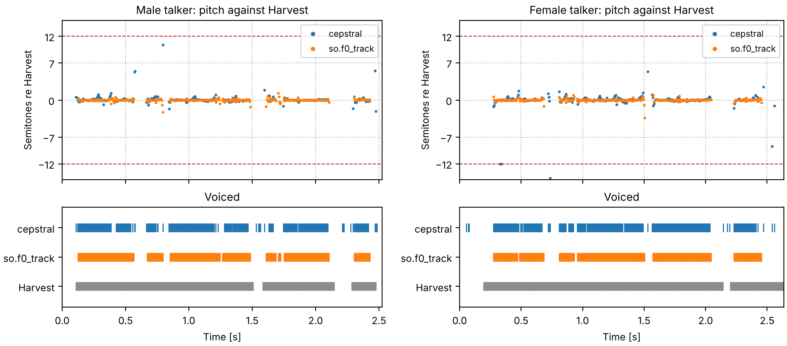
Code
fig = plt.figure(figsize=(10, 4.4), layout="constrained")
for column, label in zip(fig.subfigures(1, 2), talkers, strict=True):
top, bottom = column.subplots(2, 1, sharex=True, height_ratios=[1.6, 1])
t = tracks[label].t
f0 = pitch[label]
for name in ("cepstral", "so.f0_track"):
on = (f0[name] > 0) & (f0["Harvest"] > 0)
top.plot(
t[on], 12 * np.log2(f0[name][on] / f0["Harvest"][on]), ".", ms=3, color=COLORS[name], label=name
)
top.set(ylim=(-15, 15), ylabel="Semitones re Harvest", title=f"{label}: pitch against Harvest")
top.set_yticks([-12, -7, 0, 7, 12])
top.axhline(-12, color="tab:red", ls="--", lw=0.8)
top.axhline(12, color="tab:red", ls="--", lw=0.8)
top.legend(loc="upper right", fontsize=8, markerscale=2)
top.grid(ls=":")
for row, name in enumerate(("Harvest", "so.f0_track", "cepstral")):
on = f0[name] > 0
bottom.plot(t[on], np.full(on.sum(), row), "|", ms=8, color=COLORS[name])
bottom.set(ylim=(-0.7, 2.7), xlim=(0, talkers[label].duration), xlabel="Time [s]", title="Voiced")
bottom.set_yticks([0, 1, 2], ["Harvest", "so.f0_track", "cepstral"])
Where all three are voiced, so.f0_track sits on Harvest; the cepstral F0 scatters more (the
table counts how often each is within 5%) and, for the female talker only, drops by an
octave. Most of the disagreement between the tracks is about voicing: Harvest runs on through
stretches the other two leave unvoiced, and the cepstral F0 flickers on and off at the edges
of voiced stretches, where its peak hovers around the threshold.
A pitch track, heard
The quickest way to hear a pitch track is to play it. A band-limited sawtooth that follows the
track, silent where the track says unvoiced, keeps the intonation and nothing else. Errors that
are small on a plot are easy to hear: an octave slip is a sudden drop, and a time window wrongly
called voiced or unvoiced is a click or a hole.
The sentence
Each talker's sentence, for reference.
Male talker
hp0_the_sentence_male_talker.flac, 2.5 s, mono
Female talker
hp0_the_sentence_female_talker.flac, 2.6 s, mono
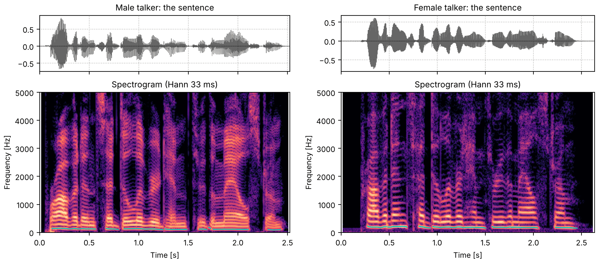
Code
sounds = talkers
fig, playhead = show_talkers(sounds, "the sentence", tracks)
A sawtooth on so.f0_track
A sawtooth on so.f0_track. The path is continuous, and voicing switches only where the
waveform stops repeating well, so the buzz comes in syllables.
with the weights chosen to make the error as small as possible over a short time window. The
predictor is a filter: the window is modeled as white noise through 1/A(z), with
A(z) = 1 + a_1 z^{-1} + \dots + a_p z^{-p}. That is an all-pole filter like the cascade of
resonators of A vowel, piece by piece, and each pair of
roots of A(z), at radius r and angle \theta, is a resonance at \theta f_s / 2\pi Hz,
-\ln r \, f_s / \pi Hz wide: Klatt's resonator read backward (its poles sit at radius
e^{-\pi B_k T} and angle 2\pi F_k T). so.LPC fits the predictor to every time window, and
so.formant_track follows Praat's recipe for formants (resample to twice a ceiling, 5000 Hz for
a male voice and 5500 Hz for a female one, fit ten poles, keep every root) and then links the
roots of neighboring windows into F1, F2 and F3.
On a synthesized vowel the answer is known, so the estimate can be checked. The numbers below
come from this page's sounds; docs/design/views/lpc.md measures them more widely, including how
the estimate drifts as the pitch rises.
Code
from scipy.signal import lfilter
def preemphasize(snd):
"""y[n] = x[n] - 0.97 x[n-1]: lifts the highs so the poles go to the formants, not the
falling slope of the source."""
return so.Sound(lfilter([1, -0.97], 1, snd.data, axis=0), snd.fs)
def peaks(freqs, level_db):
"""Frequencies of the local maxima of an envelope, refined by a parabola, 90 Hz to 5 kHz."""
middle = level_db[1:-1]
index = np.flatnonzero((middle > level_db[:-2]) & (middle >= level_db[2:])) + 1
before, at, after = level_db[index - 1], level_db[index], level_db[index + 1]
found = freqs[index] + 0.5 * (before - after) / (before - 2 * at + after) * (freqs[1] - freqs[0])
return found[(found > 90) & (found < 5000)]
One vowel, four envelopes, and the formants LPC finds
The vowel of "hod" at 100 Hz from so.klatt_synthesize, one time window in its middle. The
dots are its harmonics; the dashed lines are the formants it was given. Four envelopes are
drawn over them, each moved up or down to sit on the harmonics: LPC (order 18), and three that
the next section explains, the cepstrum liftered at half
a period and thirteen MFCCs, and CheapTrick's, which A richer source-filter
model builds, all from the same pre-emphasized sound. LPC
follows the peaks closely. Its roots are not all formants: with 18 poles at 16 kHz some fit
the slope of the source or the harmonics instead, which is why so.formant_track fits ten
poles below a 5000 Hz ceiling and then picks among them. The triangles are its F1 to F3,
within a few hertz of the given formants (the cell prints them). The cepstral envelope keeps
some ripple from the harmonics, so it has extra peaks below F1; thirteen MFCCs smooth F1 and
F2 into one hump. MFCCs are not meant to find formants; the figure shows what each envelope
keeps.
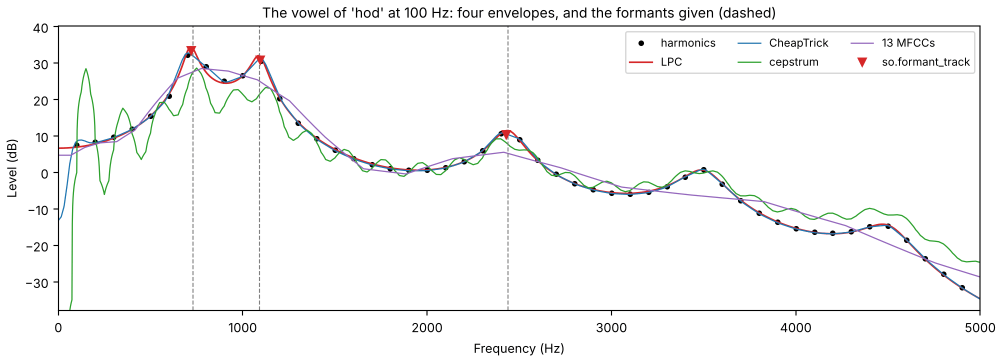
Code
raw = so.klatt_synthesize(0.5, FS, F0=100, **hod)
vowel = preemphasize(raw)
time = 0.25
freqs = np.arange(0, 5001, 2.0)
vowel_envelopes = {}
lpc = so.LPC(vowel, win_dur=0.040, hop_dur=0.005)
column = int(np.argmin(np.abs(lpc.t - time)))
vowel_envelopes["LPC"] = lpc.envelope(freqs)[0, :, column]
vowel_envelopes["CheapTrick"] = so.pitch_adaptive_envelope(vowel, ([time], [100.0]))([time], freqs)[0, :, 0]
stft = so.STFT(vowel, win_dur=0.040, hop_dur=0.005)
cepstrum = so.Cepstrum(stft).lifter(0.5 / 100)
cep_freqs = np.arange(cepstrum.n_fft // 2 + 1) * FS / cepstrum.n_fft
vowel_envelopes["cepstrum"] = np.interp(freqs, cep_freqs, cepstrum.envelope()[0, :, column] ** 2)
mfcc = so.MFCC(vowel, triangles="area", hop_dur=0.005)
vowel_envelopes["13 MFCCs"] = mfcc.envelope(freqs)[0, :, int(np.argmin(np.abs(mfcc.t - time)))]
spectrum = np.abs(np.fft.rfft(vowel.data[FS // 4 - 320 : FS // 4 + 320, 0] * np.hanning(640), 8192)) ** 2
spectrum_freqs = np.fft.rfftfreq(8192, 1 / FS)
harmonic_freqs = np.arange(1, 50) * 100.0
harmonic_db = 10 * np.log10(np.interp(harmonic_freqs, spectrum_freqs, spectrum))
fig, ax = plt.subplots(figsize=(10, 3.6), layout="constrained")
ax.plot(harmonic_freqs, harmonic_db, "o", ms=3, color="k", label="harmonics")
for (name, envelope), color in zip(vowel_envelopes.items(), ["C3", "C0", "C2", "C4"], strict=True):
level_db = 10 * np.log10(envelope)
shift = np.mean(harmonic_db - np.interp(harmonic_freqs, freqs, level_db))
ax.plot(freqs, level_db + shift, color=color, lw=1.2 if name == "LPC" else 0.9, label=name)
found = peaks(freqs, level_db)[:3]
print(f"{name:10} first three peaks: " + ", ".join(f"{f:.0f}" for f in found) + " Hz")
roots, _ = lpc.candidates()
print("Order-18 LPC roots: " + ", ".join(f"{f:.0f}" for f in roots[0, :, column] if f < 5000) + " Hz")
track = so.formant_track(raw) # pre-emphasizes inside, as Praat does
lpc_formants = track.frequencies[0][:, int(np.argmin(np.abs(track.t - time)))]
print("so.formant_track: " + ", ".join(f"{f:.0f}" for f in lpc_formants) + " Hz (given 730, 1090, 2440)")
for formant, _ in HOD[:3]:
ax.axvline(formant, color="0.5", ls="--", lw=0.8)
ax.plot(
lpc_formants,
np.interp(lpc_formants, freqs, 10 * np.log10(vowel_envelopes["LPC"])) + 3,
"v",
color="C3",
ms=6,
label="so.formant_track",
)
ax.set(xlabel="Frequency (Hz)", ylabel="Level (dB)", xlim=(0, 5000))
ax.set_ylim(harmonic_db.max() - 70, harmonic_db.max() + 8)
ax.set_title("The vowel of 'hod' at 100 Hz: four envelopes, and the formants given (dashed)")
ax.legend(loc="upper right", fontsize=8, ncols=3)
A recording
The same analysis on the two talkers, with so.f0_track deciding where to draw the formants,
since they are only meaningful where the voice is voiced. There is no answer to check against
here, only Praat: the tracks agree with Praat's own formants to a few hertz in the median (the
tests check a stretch of each sentence).
Code
def draw_tracks(axes, track, voiced=None):
"""F1 to F3 from a FormantTrack over a spectrogram panel (in Hz), voiced time windows only."""
keep = np.ones(len(track.t), bool) if voiced is None else voiced
for number in range(3):
axes.plot(track.t, np.where(keep, track.frequencies[0, number], np.nan), color="w", lw=1.4)
axes.plot(track.t, np.where(keep, track.frequencies[0, number], np.nan), color="C3", lw=0.8)
CEILINGS = {"Male talker": 5000, "Female talker": 5500}
formant_tracks, voicing = {}, {}
for label, snd in talkers.items():
formant_tracks[label] = so.formant_track(snd, ceiling=CEILINGS[label])
on_grid = np.interp(formant_tracks[label].t, tracks[label].t, tracks[label].voiced[0].astype(float))
voicing[label] = on_grid > 0.5
Formant tracks of two talkers
Both sentences, with F1 to F3 drawn where the voice is voiced. The female talker's formants
are higher, and the tracks are less steady: with the harmonics farther apart there is less
envelope for LPC to fit (see Harmonics sample the envelope).
fig = plt.figure(figsize=(10, 3.4), layout="constrained")
playhead = {}
for column, (label, snd) in zip(fig.subfigures(1, 2), talkers.items(), strict=True):
ax = column.subplots()
so.STFT(snd, win_dur=0.006, hop_dur=0.001).plot(ax, db_range=60, colorbar=False, fmax=5000)
draw_tracks(ax, formant_tracks[label], voicing[label])
ax.set(xlim=(0, snd.duration), title=f"{label}: F1 to F3 from so.formant_track")
playhead[label] = [ax]
sounds = talkers
Copy synthesis
With formant tracks and a pitch track, the synthesizer can be driven from a recording rather
than by hand. Here so.klatt_synthesize gets, every 5 ms, the measured F1 to F3 (with a
five-window median to take out single-window jumps), the measured F_0 while voiced, a
voicing level that follows the recording's level, and, where the voice is unvoiced,
aspiration noise at that level through the same tracked formants (none where the recording
is more than 35 dB below its loudest). F4 and F5, the bandwidths
and the source are the synthesizer's defaults. This is a crude copy: it keeps the formants,
the pitch and the level, and drops everything else, including the shape of the fricatives
and bursts, which go through the formants as breath noise.
Code
from scipy.ndimage import median_filter
def copy_synthesis(snd, track, f0_track, voiced):
"""Klatt parameters from measured tracks: F1-F3 (median of 5 windows), F0 where voiced, AV
following the level in dB where voiced, AH at that level where unvoiced and not silent."""
times = track.t
inside = (times >= 0) & (times <= snd.duration)
times, voiced = times[inside], voiced[inside]
formants = median_filter(np.nan_to_num(track.frequencies[0][:, inside], nan=1000.0), size=(1, 5))
samples, window = snd.data[:, 0], round(0.025 * snd.fs)
starts = np.clip(np.round(times * snd.fs).astype(int) - window // 2, 0, len(samples) - window)
level = np.array([np.sqrt(np.mean(samples[s : s + window] ** 2)) for s in starts]) + 1e-12
level_db = 20 * np.log10(level / level.max())
f0 = np.interp(times, f0_track.t, np.where(f0_track.voiced[0], f0_track.f0[0], 0.0))
return so.klatt_synthesize(
snd.duration,
snd.fs,
F0=(times, np.where(voiced, f0, 0.0)),
AV=(times, np.where(voiced, np.maximum(60 + level_db, 0), 0)),
AH=(times, np.where(voiced | (level_db < -35), 0, 55 + level_db)),
F1=(times, formants[0]),
F2=(times, formants[1]),
F3=(times, formants[2]),
rng=0,
)
copies = {
label: copy_synthesis(snd, formant_tracks[label], tracks[label], voicing[label])
for label, snd in talkers.items()
}
The male talker and the copy
The male talker: the recording, then the copy. The formant movements and the melody carry
over; the voice quality, the consonants and the higher formants do not. The copy is also
darker above 1 kHz, most likely because the synthesizer's default source falls off faster
than this talker's voice. How intelligible the
copy is has not been measured.
Formants are a few numbers. The spectral envelope is the whole shape the vocal tract gives
the harmonics, as a smooth curve, and the cepstrum of Pitch from the
cepstrum holds it at its low quefrencies.
One time window
Take one time window in the middle of a vowel. Its log spectrum is a comb of harmonics riding
on the formant envelope. Its cepstrum has most of its weight in the first few milliseconds, and
one clear peak at the pitch period. Keeping only the quefrencies below half a period (a
lifter, the cepstral counterpart of a filter) and transforming back gives a smooth envelope.
The female talker's voice is higher, and that moves both marks. The cepstral peak sits at a
shorter quefrency, closer to the envelope's part of the cepstrum, though still clear of it. And
the lifter at half a period has to cut lower, so it keeps fewer quefrencies, and the envelope
it recovers is smoother: with the harmonics farther apart, the spectrum samples the envelope
less often (see Harmonics sample the envelope), and there
is less of it to recover.
Code
TIMES = {"Male talker": 0.50, "Female talker": 0.60} # one time window in a vowel of each sentence
window = {}
for label, cep in cepstra.items():
t, f0, peak = cep.f0()
i = int(np.argmin(np.abs(t - TIMES[label])))
window[label] = {"i": i, "t": t[i], "f0": f0[0, i], "peak": peak[0, i], "cutoff": 0.5 / f0[0, i]}
print(
f"{label}: time window at {t[i]:.3f} s, cepstral peak at {1e3 / f0[0, i]:.2f} ms "
f"(F0 {f0[0, i]:.0f} Hz), lifter cutoff {0.5e3 / f0[0, i]:.2f} ms"
)
Male talker: time window at 0.500 s, cepstral peak at 7.94 ms (F0 126 Hz), lifter cutoff 3.97 ms
Female talker: time window at 0.600 s, cepstral peak at 4.74 ms (F0 211 Hz), lifter cutoff 2.37 ms
The lifter's envelope runs under the harmonic peaks, since it averages the peaks with the dips
between them, and the farther apart the harmonics, the more dip there is to average in. The cell
measures how far above the envelope each harmonic peak up to 4 kHz rises: the median, and how
much that varies from harmonic to harmonic. An envelope built to follow the peaks instead,
CheapTrick's, is the subject of An envelope measured to the pitch
period.
Code
def above_envelope(label, envelope_db):
"""How far each harmonic peak up to 4 kHz rises above an envelope (dB), in one time window."""
stft, w = stfts[label], window[label]
spectrum_db = 20 * np.log10(np.abs(stft.data[0, :, w["i"]]))
gaps = []
for harmonic in range(1, int(4000 / w["f0"]) + 1):
near = np.nonzero(np.abs(stft.f - harmonic * w["f0"]) < w["f0"] / 2)[0]
top = near[np.argmax(spectrum_db[near])]
gaps.append(spectrum_db[top] - envelope_db[top])
return np.array(gaps)
lifted = {}
for label, cep in cepstra.items():
w = window[label]
lifted[label] = 20 * np.log10(cep.lifter(w["cutoff"]).envelope()[0, :, w["i"]])
gaps = above_envelope(label, lifted[label])
print(
f"{label}: harmonic peaks a median {np.median(gaps):.1f} dB above the envelope, "
f"spread (SD) {np.std(gaps):.1f} dB"
)
Male talker: harmonic peaks a median 7.4 dB above the envelope, spread (SD) 3.7 dB
Female talker: harmonic peaks a median 15.6 dB above the envelope, spread (SD) 5.1 dB
One time window
One time window of each talker's sentence. Top: the log spectrum and the envelope liftered
below half a period. Bottom: the cepstrum, with the peak at one period and the lifter's cutoff. The
female talker's peak is at a shorter quefrency and the cutoff is lower; the female talker's
liftered envelope runs farther below the harmonic peaks.
For both talkers the peaks rise well above the liftered envelope, and farther for the higher
voice, unevenly from harmonic to harmonic. This page keeps to the lifter, the simpler envelope;
A richer source-filter model builds CheapTrick's, which follows the peaks, and
Rebuilding and changing a voice synthesizes from it.
Splitting the voice in two
Lifter the other way and the two parts can be heard separately. Each time window keeps its own
lifter cutoff, half of its pitch period, following Harvest's track (bridged across unvoiced
stretches), so the female talker's cutoffs are mostly lower. Low quefrencies keep the vocal
tract; high quefrencies keep the source.
Code
tract_part, source_part = {}, {}
for label, cep in cepstra.items():
harvest_t, harvest_f0 = harvest[label]
voiced = harvest_f0 > 0
cutoffs = 0.5 / np.exp(np.interp(cep.t, harvest_t[voiced], np.log(harvest_f0[voiced]))) # half a period
tract_part[label] = cep.lifter(cutoffs) # low quefrencies: the envelope
source_part[label] = cep.lifter(cutoffs, keep="high") # high quefrencies: the harmonics
# but keep each time window's mean log level, so pauses stay quiet
source_part[label].data[:, 0] = cep.data[:, 0]
low, middle, high = 1e3 * np.percentile(cutoffs, [5, 50, 95])
print(f"{label}: lifter cutoffs median {middle:.1f} ms, middle 90% {low:.1f} to {high:.1f} ms")
Male talker: lifter cutoffs median 4.1 ms, middle 90% 3.3 to 5.1 ms
Female talker: lifter cutoffs median 2.7 ms, middle 90% 1.8 to 4.0 ms
Envelope only, on a 200 Hz pulse train
The vocal tract alone: every time window's envelope given its minimum phase, the phase that
packs a filter's response as early as it can go, so that each time window becomes one short
pulse at its center. The time windows are 5 ms apart, so for both talkers the pulses make the
same steady 200 Hz buzz. The words survive; the intonation, and much of what tells the two
talkers apart, does not.
sounds = {label: finish(tract_part[label].to_sound(phase="minimum")) for label in talkers}
fig, playhead = show_talkers(sounds, "envelope only, minimum phase", win_dur=0.005)
Harmonics only, the envelope flattened
The source alone: the high quefrencies, plus each time window's overall level, with the
original phase. The formants are flattened away, leaving the harmonics at roughly equal level,
a buzzy voice that still carries each talker's intonation. The narrowband spectrograms show
the harmonics running flat across frequency, farther apart for the female talker.
wholes = {label: cep.to_sound() for label, cep in cepstra.items()}
sounds = {label: finish(whole) for label, whole in wholes.items()}
fig, playhead = show_talkers(sounds, "unliftered, original phase", win_dur=0.005)
Code
for label, whole in wholes.items():
print(
f"{label}: largest difference from the sentence {np.abs(whole.data - talkers[label].data).max():.1e}"
)
Male talker: largest difference from the sentence 5.6e-16
Female talker: largest difference from the sentence 5.6e-16
MFCCs: a cepstrum on the mel scale
Speech recognizers have long described each time window by its mel-frequency cepstral
coefficients (Davis & Mermelstein, 1980). The recipe is the cepstrum's, with one step put in
front: the power spectrum is first summed into a few dozen triangular bands spaced evenly on
the mel scale, a frequency scale that is roughly linear below 1 kHz and logarithmic above, as
the ear's resolution is. Then the logarithm, and a cosine transform (a DCT) of the 26 log band
powers in place of the Fourier transform. Keeping the first 13 coefficients is a lifter, as in
One time window: it keeps the slow shape across the bands and drops the
fine detail. so.MFCC follows the HTK and Kaldi speech recipe by default: 25 ms Hamming
windows every 10 ms, 26 bands up to half the sampling rate, 13 coefficients.
The aim is to keep the vocal tract and drop the pitch. The bands and the lifter both smooth over
the harmonics, but not completely: the lowest bands are narrower than the gap between
harmonics of a higher voice, so some sit on a harmonic and their neighbors between two, and
the pitch leaks back into the coefficients. A vowel synthesized with a known vocal tract shows
how much.
Code
from scipy.fft import dct, idct
from sonore.core.utils import freq_to_mel
from sonore.views.mfcc import mel_filterbank
# Two vowels as sums of harmonics, each harmonic weighted by a vocal tract of four resonances
# (rounded Peterson & Barney, 1952, male averages; bandwidths chosen here), so the true
# envelope is known exactly.
FORMANTS = {
"a": [(730, 60), (1090, 100), (2440, 120), (3400, 175)],
"i": [(270, 60), (2290, 100), (3010, 120), (3400, 175)],
}
def tract_gain(freqs, vowel):
"""The vocal tract's |H(f)|: a cascade of second-order resonators."""
z = np.exp(-2j * np.pi * np.asarray(freqs, dtype=float) / FS)
denominator = np.ones_like(z)
for center, bandwidth in FORMANTS[vowel]:
radius = np.exp(-np.pi * bandwidth / FS)
denominator *= 1 - 2 * radius * np.cos(2 * np.pi * center / FS) * z + radius**2 * z**2
return 1 / np.abs(denominator)
def synthetic_vowel(f0, vowel, duration=0.4):
times = np.arange(round(duration * FS)) / FS
harmonic_freqs = f0 * np.arange(1, int(0.45 * FS / f0) + 1)
amplitudes = tract_gain(harmonic_freqs, vowel)
waves = amplitudes[:, None] * np.cos(2 * np.pi * harmonic_freqs[:, None] * times)
return so.Sound(waves.sum(0), FS)
def keep_13(band_power):
"""Band powers to 13 MFCCs and back: the log band powers the coefficients keep."""
coefficients = dct(np.log(band_power), type=2, norm="ortho", axis=0)
coefficients[13:] = 0
return idct(coefficients, type=2, norm="ortho", axis=0)
f_plot = np.linspace(0, 5000, 1001)
f0s = (100, 150, 200, 250, 300)
smoothed = {} # (source, vowel, F0): the 13-coefficient log band powers, level removed
for vowel_name in FORMANTS:
for f0 in f0s:
vowel_sound = synthetic_vowel(f0, vowel_name)
mfcc_vowel = so.MFCC(vowel_sound)
middle = len(mfcc_vowel.t) // 2
envelope_vowel = so.pitch_adaptive_envelope(
vowel_sound, (mfcc_vowel.t[middle : middle + 1], np.array([float(f0)]))
)
envelope_freqs = np.arange(envelope_vowel.n_fft // 2 + 1) * FS / envelope_vowel.n_fft
envelope_weights, _ = mel_filterbank(26, envelope_freqs, 0, FS / 2)
for source_name, band_power in (
("power spectrum", mfcc_vowel.mel_power[0, :, middle]),
("CheapTrick envelope", envelope_weights @ envelope_vowel.data[0, :, 0]),
):
log_power = keep_13(band_power)
smoothed[source_name, vowel_name, f0] = log_power - log_power.mean()
band_mels = freq_to_mel(mfcc_vowel.cfs)
true_db = 20 * np.log10(tract_gain(f_plot, "a"))
def on_plot_axis(log_power):
"""13-coefficient log band powers in dB, drawn between the band centers as so.MFCC.envelope
does (linear in mel), and shifted to the true envelope's mean level from 100 Hz up."""
level_db = 10 / np.log(10) * np.interp(freq_to_mel(f_plot), band_mels, log_power)
above_100 = f_plot >= 100
return level_db + np.mean(true_db[above_100] - level_db[above_100])
One vowel at three pitches
The vowel /a/ at three pitches, each analyzed in one 25 ms time window. Left: the 13 MFCCs of its
power spectrum, drawn back as an envelope (as mfcc.envelope(f) does). Right: the same 13
coefficients taken from CheapTrick's envelope instead, summed into the same mel bands. Dashed: the
vocal tract the harmonics were weighted by. Levels are matched to it, since only the shape matters
here (the level is c0). From the power spectrum, the lowest bands, below the first harmonic of
the 200 and 300 Hz voices, drop far below the vocal tract, and the first formant changes shape
with the pitch. CheapTrick's envelope (CheapTrick, step by
step) has already smoothed over one harmonic spacing, so
the three curves nearly coincide. The 13 coefficients cannot follow the formant peaks at any of
the pitches: that is the lifter, and it is the same for all three.
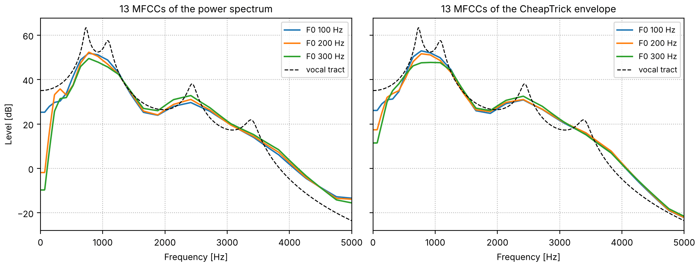
Code
fig, axes = plt.subplots(1, 2, figsize=(10, 3.8), sharey=True, layout="constrained")
for ax, source_name in zip(axes, ("power spectrum", "CheapTrick envelope"), strict=True):
for f0, color in zip((100, 200, 300), ("tab:blue", "tab:orange", "tab:green"), strict=True):
ax.plot(
f_plot, on_plot_axis(smoothed[source_name, "a", f0]), color=color, lw=1.5, label=f"F0 {f0} Hz"
)
ax.plot(f_plot, true_db, "k--", lw=1, label="vocal tract")
ax.set(xlim=(0, 5000), xlabel="Frequency [Hz]", title=f"13 MFCCs of the {source_name}")
ax.legend(loc="upper right", fontsize=8)
ax.grid(ls=":")
axes[0].set_ylabel("Level [dB]")
The distance between two such curves, the rms difference over the 26 bands in dB, puts a
number on it: the cell compares the same vowel at two F0s between 100 and 300 Hz with /a/
against /i/ at one F0.
Code
def distance_db(first, second):
return 10 / np.log(10) * np.sqrt(np.mean((first - second) ** 2))
pitch_share = {}
for source_name in ("power spectrum", "CheapTrick envelope"):
same_vowel = [
distance_db(smoothed[source_name, vowel_name, low], smoothed[source_name, vowel_name, high])
for vowel_name in FORMANTS
for low in f0s
for high in f0s
if low < high
]
across = [distance_db(smoothed[source_name, "a", f0], smoothed[source_name, "i", f0]) for f0 in f0s]
pitch_share[source_name] = np.median(same_vowel) / np.median(across)
print(
f"from the {source_name}: same vowel at two F0s, median {np.median(same_vowel):.1f} dB "
f"(largest {max(same_vowel):.1f}); /a/ vs /i/ at one F0, {min(across):.1f} to {max(across):.1f} dB "
f"(median {np.median(across):.1f}); ratio of medians {pitch_share[source_name]:.2f}"
)
from the power spectrum: same vowel at two F0s, median 5.6 dB (largest 9.2); /a/ vs /i/ at one F0, 15.4 to 17.6 dB (median 16.0); ratio of medians 0.35
from the CheapTrick envelope: same vowel at two F0s, median 2.2 dB (largest 3.8); /a/ vs /i/ at one F0, 15.6 to 17.9 dB (median 16.4); ratio of medians 0.13
Taken from the power spectrum, a change of pitch alone moves the coefficients
0.35 times as far as the change from /a/ to /i/ (the
ratio of the medians); taken from CheapTrick's envelope,
0.13 times as far. Since the two talkers differ
in pitch, part of what separates their MFCCs is pitch rather than vocal tract.
The sentence as MFCCs
Each talker's sentence, analyzed with so.MFCC. From the top: the 26 log band powers (the
mel spectrogram, mfcc.plot(kind="mel")); the 13 coefficients, without c0, the level
(mfcc.plot()); the band powers the 13 coefficients keep, drawn back from them; and
CheapTrick's envelope on the same bands, from the so.f0_track pitch track (unvoiced time
windows are analyzed as if at 500 Hz). The coefficients are hard to read by eye; drawn back,
they are a mel spectrogram smoothed across the bands. In the female talker's mel spectrogram
the lowest band, centered below the female talker's pitch, is nearly empty; CheapTrick's
envelope, smoothed across the harmonics, fills it in.
mfccs = {label: so.MFCC(snd) for label, snd in talkers.items()}
envelopes = {label: so.pitch_adaptive_envelope(snd, tracks[label]) for label, snd in talkers.items()}
def band_image(ax, mfcc, times, band_db, title):
"""Band powers in dB as an image, one row per mel band, over 60 dB."""
rows = np.arange(len(mfcc.cfs))
vmax = band_db.max()
ax.pcolormesh(
times, rows, band_db, cmap="magma", vmin=vmax - 60, vmax=vmax, shading="auto", rasterized=True
)
ax.set_yticks(rows[::5], [f"{mfcc.cfs[row]:.0f}" for row in rows[::5]])
ax.set(title=title, xlabel="", ylabel="Band center [Hz]")
sounds = talkers
fig = plt.figure(figsize=(10, 9), layout="constrained")
playhead = {}
for column, (label, snd) in zip(fig.subfigures(1, 2), sounds.items(), strict=True):
axes = column.subplots(4, 1, sharex=True)
mfcc, envelope = mfccs[label], envelopes[label]
envelope_freqs = np.arange(envelope.n_fft // 2 + 1) * FS / envelope.n_fft
envelope_weights, _ = mel_filterbank(26, envelope_freqs, 0, FS / 2)
mfcc.plot(axes[0], kind="mel", colorbar=False)
axes[0].set(title=f"{label}: mel spectrogram, 26 bands", xlabel="")
mfcc.plot(axes[1], colorbar=False)
axes[1].set(title="MFCCs c1 to c12 (c0, the level, left out)", xlabel="")
kept_db = 10 * np.log10(mfcc.envelope(mfcc.cfs)[0])
band_image(axes[2], mfcc, mfcc.t, kept_db, "The band powers 13 coefficients keep")
cheaptrick_bands = 10 * np.log10(envelope_weights @ envelope.data[0])
band_image(axes[3], mfcc, envelope.t, cheaptrick_bands, "CheapTrick's envelope in the same bands")
axes[3].set_xlabel("Time [s]")
for ax in axes:
ax.set_xlim(0, snd.duration)
playhead[label] = list(axes)
The mel bands and the cut to 13 coefficients both discard information, so MFCCs are a one-way
view: no sound can be rebuilt from them, and many different spectra share the same
coefficients. Within one band, power can move from one bin to another without the band's sum
changing; with 257 bins and 26 bands there are 231 independent ways to do it.
Reference implementations
so.Cepstrum is written from the definitions. tools/crosscheck_cepstrum.py compares it with
three independent implementations; the numbers below are from SciPy 1.17.1 and Praat 6.1.38.
**MATLAB rceps.** Its documented definition, real(ifft(log(abs(fft(x))))), written out in NumPy for one 40 ms time window, matches sonore's real cepstrum to 4e-16.
**SciPy scipy.signal.minimum_phase** (method="homomorphic", half=False) builds a minimum-phase filter by the same folding of the real cepstrum. On a 17-tap mixed-phase filter it matches sonore's minimum phase to 4e-8 of the peak; SciPy adds a tiny constant to the magnitude before the log, which is the whole difference.
Praat's PowerCepstrogram (Boersma & Weenink), through parselmouth, measures the same peak by a different route: a Gaussian window, the power spectrum in dB, and the sound resampled to 10 kHz. On the time windows of the male talker's sentence that sonore calls voiced, the two peaks agree within 5% on 98% of them; on every time window Harvest calls voiced, on 81%.
See also the design and its numerical checks, docs/design/views/cepstrum.md.
so.MFCC is tested against Kaldi's MFCCs (through kaldi-native-fbank, a re-implementation of
Kaldi's feature code) to float32 precision, and against librosa's to 1e-8 of the largest
coefficient; see docs/design/views/mfcc.md.
Putting it back, simply
A pitch track and an envelope are the whole model, so a voice can be rebuilt from them. Here the
envelope is the liftered cepstrum of One time window, cut in each 40 ms
time window below half the pitch period there. envelope_view() holds it as power on its grid
of time windows and frequencies, and so.harmonic_complex takes it as amplitudes, reading it
at each harmonic's frequency and time: harmonics that follow the track, with heights that
follow the formants. Every harmonic follows n times the contour, with phase
def liftered_envelope(snd, track):
"""The cepstrum of 40 ms Hann time windows every 5 ms, liftered below half the pitch period
of each window (the track's voiced F0, interpolated on a log scale across unvoiced gaps)."""
cepstrum = so.Cepstrum(so.STFT(snd, win_dur=0.040, hop_dur=0.005))
is_voiced = track.voiced[0]
periods = 1 / np.exp(np.interp(cepstrum.t, track.t[is_voiced], np.log(track.f0[0][is_voiced])))
return cepstrum.lifter(0.5 * periods).envelope_view()
liftered = {label: liftered_envelope(snd, tracks[label]) for label, snd in talkers.items()}
harmonics_only = {
label: so.harmonic_complex(snd.duration, FS, tracks[label], amplitudes=liftered[label])
for label, snd in talkers.items()
}
Harmonics shaped by the envelope
Harmonics on each talker's so.f0_track with the liftered envelope as their amplitudes, silent
where the track says unvoiced. The voiced sounds are there, in each talker's intonation; the
consonants that are noise are missing. The female talker's harmonics are farther apart, so
each formant is drawn by fewer of them.
sounds = {label: finish(voice) for label, voice in harmonics_only.items()}
fig, playhead = show_talkers(sounds, "harmonics, liftered envelope", tracks)
Where the track says unvoiced, the sound is noise: fricatives, bursts and breath. The classic
source-filter vocoder switches between two sources, a buzz where voiced and a hiss where not,
and so.source_filter_synthesize given only a pitch track and an envelope does the same: the
harmonics above where the track is voiced, and white noise whose STFT is shaped by the envelope
where it is not. Both are scaled to the envelope's level, so the balance between the voiced and
the unvoiced stretches comes from the envelope rather than being set by hand. The cell measures
that balance in the recording and in the rebuilt sentence.
Code
rebuilt = {
label: so.source_filter_synthesize(tracks[label], liftered[label], fs=FS, duration=snd.duration, rng=2)
for label, snd in talkers.items()
}
def rms(x):
return np.sqrt(np.mean(x**2))
def unvoiced_re_voiced(snd, track):
"""The RMS of a sound's unvoiced stretches over that of its voiced ones, in dB."""
samples = snd.data[:, 0]
voiced = np.interp(np.arange(len(samples)) / snd.fs, track.t, track.voiced[0].astype(float))
return 20 * np.log10(rms((1 - voiced) * samples) / rms(voiced * samples))
balance = {}
for label, snd in talkers.items():
balance[label] = (
unvoiced_re_voiced(snd, tracks[label]),
unvoiced_re_voiced(rebuilt[label], tracks[label]),
)
print(
f"{label}: unvoiced stretches {balance[label][0]:.1f} dB re the voiced ones in the recording, "
f"{balance[label][1]:.1f} dB in the rebuilt sentence"
)
Male talker: unvoiced stretches -14.9 dB re the voiced ones in the recording, -10.3 dB in the rebuilt sentence
Female talker: unvoiced stretches -17.0 dB re the voiced ones in the recording, -8.0 dB in the rebuilt sentence
Shaped noise in the gaps
The same harmonics with envelope-shaped noise where the track says unvoiced, all from one call
to so.source_filter_synthesize. The s, t and h sounds come back: each sentence is
rebuilt from two measurements, a pitch track and a spectral envelope every 5 ms.
sounds = {label: finish(snd) for label, snd in rebuilt.items()}
fig, playhead = show_talkers(sounds, "so.source_filter_synthesize, no aperiodicity", tracks)
The noise comes out louder than in the recordings, by
5 dB for the male talker and
9 dB for the female
one, relative to the voiced stretches. The voiced stretches are the ones that are too quiet: in
a voiced time window the liftered envelope runs below the harmonic peaks, as One time
window measured, and farther below for the higher voice.
The long-term spectrum (so.long_term_spectrum) says where a whole sentence puts its power,
and so whether a copy has the overall shape of the original. The cell prints how each
sentence's power divides among octave bands, in the recording and in the rebuilt sentence.
Code
spectra = {
label: {"recording": so.long_term_spectrum([snd]), "rebuilt": so.long_term_spectrum([rebuilt[label]])}
for label, snd in talkers.items()
}
octave_edges = [63, 125, 250, 500, 1000, 2000, 4000, 8000]
shares = {} # (talker, recording or rebuilt): the share of the power in each octave, in dB
print("octave from [Hz] " + "".join(f"{low:>6}" for low in octave_edges[:-1]))
for label, pair in spectra.items():
for name, spectrum in pair.items():
power = 10 ** (spectrum.level / 10)
shares[label, name] = np.array(
[
10 * np.log10(power[(spectrum.f >= low) & (spectrum.f < high)].sum() / power.sum())
for low, high in zip(octave_edges[:-1], octave_edges[1:], strict=True)
]
)
print(
f"{label + ', ' + name + ', share [dB]':35}" + "".join(f"{x:6.1f}" for x in shares[label, name])
)
# how much more of its power the rebuilt sentence has in the two octaves from 2 to 8 kHz
high_gain = {label: (shares[label, "rebuilt"] - shares[label, "recording"])[-2:] for label in talkers}
The long-term spectra of each recording and of its rebuilt sentence, smoothed to a third of
an octave. Below 125 Hz the female talker's sentence has almost nothing, since the female
talker's pitch never goes that low, and the octave from 125 to 250 Hz, where it lies, holds most
of the power.
From 125 Hz to 2 kHz the rebuilt sentences divide their power much as the recordings do, within
about 4 dB in each octave (below 125 Hz the female talker's sentence has almost nothing, and the
copy a little more). The two octaves from 2 to 8 kHz hold more of it:
3 to 4 dB more for
the male talker and
8 to 9 dB more for
the female one. That is where the fricatives are, and so where the noise that came out too loud
adds the most.
Where it falls short
The model is all here, and the rebuilt voice falls short of the recording in three ways that
this page can point to, each taken up by A richer source-filter model:
The envelope. The lifter averages the harmonic peaks with the dips between them, so in a voiced time window its envelope runs under the peaks, the farther the higher the voice, and the rebuilt voice comes out too quiet next to its noise. An envelope measured to the pitch period, CheapTrick's, follows the peaks instead.
Voicing is all or nothing. Each time window is either harmonics or noise, so a breathy vowel, harmonics and noise at once as in A breathy vowel, can only come back as one or the other. A measured share of noise at each frequency, the aperiodicity, mixes the two.
The phases are chosen, not measured.so.harmonic_complex starts every harmonic in cosine phase, so each period is one sharp pulse, whatever the recording's waveform was. Phases on a moving pitch hears what other choices do.
What this page leaves out
The rest of voice quality. KLSYN88 (Klatt & Klatt, 1990) has more voice controls than the LF pulse: open quotient, a spectral tilt filter, flutter (slow random jitter of F_0) and double pulsing, and its own polynomial pulse (KLGLOTT88). sonore has the LF pulse only.
Rules. Text-to-speech systems drive formant synthesizers from phonetic rules, which generate the tracks from a transcription. Here every track is set by hand or measured.
Drawing the tracks.sonore-sketch, a separate browser app built on sonore, draws formant, F_0, voicing and bandwidth tracks with a mouse and plays what the synthesizer makes of them.
Tracking from the cepstrum. Cepstral F0 judges each time window alone. so.f0_track chooses a path through candidates from the waveform; the same could be done with cepstral peaks as the candidates, which would remove most of the octave slips above.
A reference for the pitch. The tracks are compared with each other, not with the vocal folds. The checks against laryngograph recordings are in docs/design/views/f0.md.
A better formant copy.Copy synthesis keeps three formants, the pitch and the level. A fuller copy would also fit F4, the bandwidths, the voicing source and the parallel branch for the consonants.
Other cepstra on a warped axis. The mel-generalized cepstra of speech synthesis warp the frequency axis inside the cepstrum rather than with bands; PLP and gammatone cepstra use other auditory bands. MFCC deltas (mfcc.deltas()) are not shown.
The complex cepstrum. It keeps the phase as well, but needs phase unwrapping, which is fragile on real sounds; sonore provides the real cepstrum and takes phase from the STFT or from the minimum-phase fold.
References
Bagshaw, Hiller & Jack (1993). Enhanced pitch tracking and the processing of F0 contours for computer aided intonation teaching. Proc. Eurospeech 1993. CSTR, FDA database. The laryngograph reference in tools/check_f0_fda.py.
Boersma & Weenink. Praat: doing phonetics by computer (computer program). praat.org. Its formant recipe, which so.formant_track follows. lpc.formant_track
Bogert, Healy & Tukey (1963). The quefrency alanysis of time series for echoes: cepstrum, pseudo-autocovariance, cross-cepstrum and saphe cracking. In M. Rosenblatt (Ed.), Time Series Analysis. Wiley. Semantic Scholar. cepstrum.Cepstrum
Davis & Mermelstein (1980). Comparison of parametric representations for monosyllabic word recognition in continuously spoken sentences. IEEE Trans. Acoust., Speech, Signal Process. 28(4), 357–366. mfcc.MFCC
de Cheveigné & Kawahara (2002). YIN, a fundamental frequency estimator for speech and music. J. Acoust. Soc. Am. 111(4), 1917–1930. doi:10.1121/1.1458024. f0.f0_track
Fant (1995). The LF-model revisited. Transformations and frequency domain analysis. STL-QPSR 36(2–3), 119–156. The Rd parameter. waveforms.glottal_source
Fant, Liljencrants & Lin (1985). A four-parameter model of glottal flow. STL-QPSR 26(4), 1–13. waveforms.lf_harmonics
Klatt & Klatt (1990). Analysis, synthesis, and perception of voice quality variations among female and male talkers. J. Acoust. Soc. Am. 87(2), 820–857. doi:10.1121/1.398894. The SS source switch.
Kominek & Black (2004). The CMU Arctic speech databases. Proc. 5th ISCA Speech Synthesis Workshop, 223–224. ISCA Archive. The sentence, by speakers bdl and slt.
Morise (2017). Harvest: a high-performance fundamental frequency estimator from speech signals. Proc. Interspeech 2017, 2321–2325. doi:10.21437/Interspeech.2017-68. The stored F0 tracks.
Morise, Yokomori & Ozawa (2016). WORLD: a vocoder-based high-quality speech synthesis system for real-time applications. IEICE Trans. Inf. & Syst. E99-D(7), 1877–1884. doi:10.1587/transinf.2015EDP7457. StoneMask.